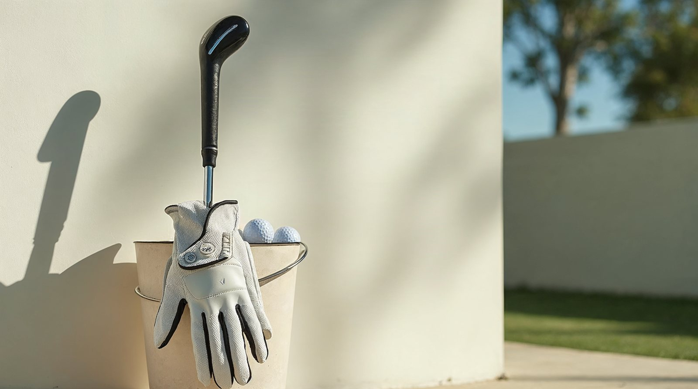
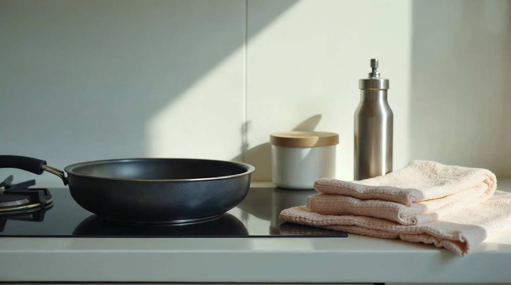
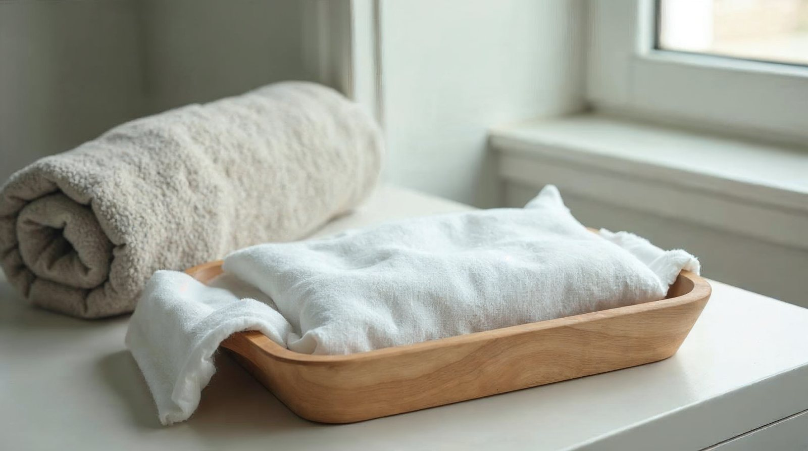
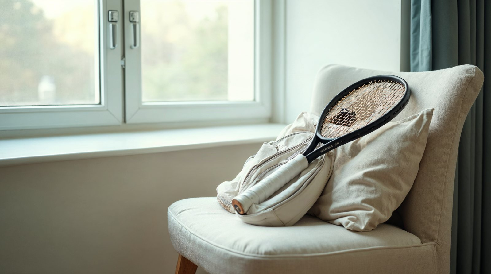
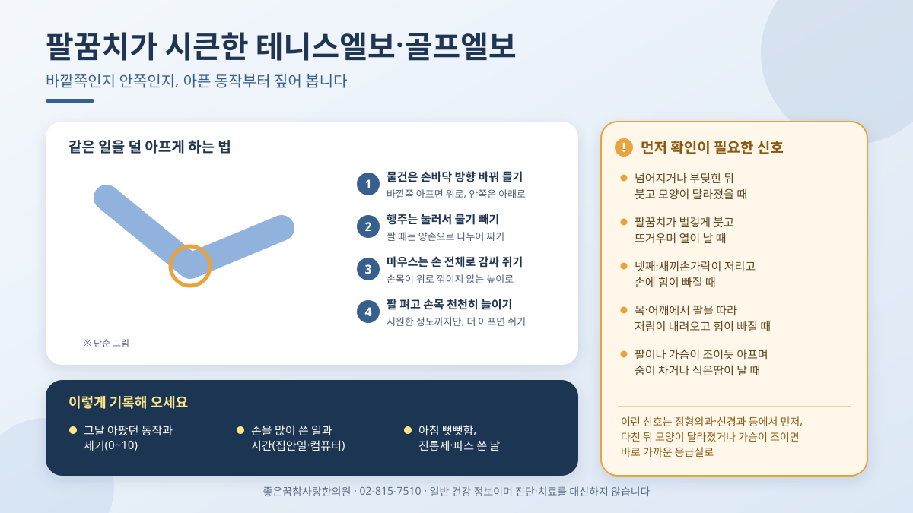

이종호 한의사 감수좋은꿈참사랑한의원 대표원장 (한의사 면허번호 19769)발행 2026-11-26 · 수정 2026-11-26
이 글의 차례
아침에 커피 잔을 들어 올리는 순간 팔꿈치 바깥쪽이 찌릿합니다. 잔을 놓칠 뻔하고 나서야 요즘 그쪽이 계속 시큰했다는 것을 깨닫습니다. 행주를 짤 때, 문고리를 돌릴 때, 마우스를 오래 쥔 날 저녁에도 그랬습니다.
이렇게 손으로 무언가를 쥐고 들거나 비틀 때 팔꿈치 바깥쪽 튀어나온 뼈 근처가 아프다면 흔히 테니스엘보라고 부르는 외측상과염을 생각합니다. 안쪽 뼈 근처가 아프다면 골프엘보, 내측상과염 쪽입니다. 저는 어느 쪽인지, 어떤 동작에서 아픈지부터 직접 해 보시게 하고 짚어 봅니다.
다만 넘어지거나 부딪힌 뒤 팔꿈치가 붓고 모양이 달라졌다면, 팔꿈치가 벌겋게 붓고 열이 난다면, 새끼손가락 쪽이 저리고 손에 힘이 빠진다면 먼저 확인이 필요합니다. 이런 경우는 한의원 진료를 기다리지 말고 정형외과나 가까운 응급실에서 먼저 살펴보셔야 합니다.
진료실에서 이런 말씀을 자주 듣습니다. 테니스도 골프도 안 치는데 왜 테니스엘보냐고요. 이름은 운동에서 왔지만, 실제로는 집안일과 컴퓨터 일, 손으로 하는 일을 오래 해 온 분들께 훨씬 흔합니다.
그래서 더 쉬기 어렵습니다. 밥을 짓고, 빨래를 개고, 장바구니를 들고, 아이를 안는 일은 멈출 수가 없으니까요. 아프다는 말을 꺼내기도 애매한 통증을 몇 달씩 안고 지내셨을 마음을 먼저 헤아리고 싶습니다.
왜 팔꿈치가 아니라 손을 쓸 때 아플까요
팔꿈치 바깥쪽 튀어나온 뼈에는 손목과 손가락을 위로 젖히는 근육들이 모여 붙습니다. 안쪽 튀어나온 뼈에는 손목을 굽히고 손가락으로 꽉 쥐는 근육들이 붙고요. 근육은 팔뚝에 있지만, 그 힘이 모이는 끝자리가 팔꿈치입니다.
그래서 팔꿈치를 굽혔다 펴는 것보다 손으로 쥐고, 들고, 비틀 때 아픕니다. 손바닥을 아래로 향한 채 물건을 들면 바깥쪽 힘줄이 버티고, 손바닥을 위로 향해 들거나 꽉 쥐면 안쪽 힘줄이 버팁니다.
같은 동작을 수없이 되풀이하면 힘줄이 붙는 자리에 작은 손상이 쌓입니다. 쉬면서 회복할 틈보다 쓰는 속도가 빠르면, 힘줄은 회복을 마치지 못한 채 다음 날을 맞습니다. 힘줄은 근육보다 피가 적게 드나드는 조직이라 회복이 더딘 편으로 알려져 있습니다.
이름에는 '염'이 붙어 있지만, 오래된 경우에는 뜨거운 염증보다 힘줄이 지치고 두꺼워진 상태에 가까운 경우가 많다고 알려져 있습니다. 몇 주 쉬면 가라앉았다가 다시 쓰면 도지기를 반복하는 것도 그래서입니다.
한의학에서는 이런 통증을 많이 쓴 자리에 기혈이 막히고 힘줄이 제대로 길러지지 못한 모습으로 봅니다. 그래서 아픈 자리와 함께 몸 전체가 회복할 여유가 있는지, 잠과 소화, 피로를 같이 살핍니다.
40~50대에 특히 흔하다고 알려져 있는 것도 이와 무관하지 않습니다. 일과 집안일로 손을 가장 많이 쓰는 시기이면서, 힘줄이 회복하는 속도는 예전 같지 않은 때이기 때문입니다.
바깥쪽인지 안쪽인지, 다른 원인은 없는지
먼저 아픈 자리를 손가락 하나로 짚어 보세요. 팔을 몸 옆에 내리고 손바닥을 앞으로 향했을 때, 바깥쪽 튀어나온 뼈 근처라면 테니스엘보, 몸 쪽 안쪽 뼈 근처라면 골프엘보 쪽입니다.
테니스엘보는 손바닥을 아래로 향하고 물건을 들 때, 행주나 걸레를 짤 때, 문고리나 병뚜껑을 돌릴 때, 마우스를 오래 쥘 때 아픕니다. 손목을 위로 젖힌 채 누가 눌러 버티면 바깥쪽이 찌릿하기도 합니다.
골프엘보는 손바닥을 위로 향해 무거운 것을 들 때, 공구나 칼을 꽉 쥘 때, 손목을 안으로 굽히며 힘을 줄 때 안쪽이 아픕니다. 반찬통 뚜껑을 누르며 닫거나 화분을 들 때 아프다는 분도 계십니다.
팔꿈치 뒤쪽 끝이 말랑하게 부어오르고 누르면 물렁하다면 힘줄보다 그 위의 주머니가 부은 경우일 수 있습니다. 벌겋고 뜨겁다면 감염도 생각해야 해서 먼저 확인이 필요합니다.
팔꿈치 안쪽이 아프면서 넷째, 새끼손가락이 저리다면 힘줄보다 그 옆을 지나는 척골신경 쪽을 살핍니다. 목과 어깨가 함께 아프고 팔을 따라 줄을 긋듯 저림이 내려온다면 목에서 오는 통증일 수 있습니다.

스스로 점검해 보세요
- 팔꿈치 바깥쪽이나 안쪽, 튀어나온 뼈 바로 아래를 누르면 아프다
- 컵이나 주전자를 들 때, 행주를 짤 때 찌릿하다
- 악수하거나 문고리를 돌릴 때 힘이 덜 들어간다
- 아침에 처음 팔을 쓸 때 뻣뻣하고, 조금 움직이면 덜하다
- 쉬면 가라앉았다가 손을 많이 쓴 날 다시 도진다
- 새끼손가락 저림이나 붓기, 열감은 없다
마지막 줄에 해당하지 않는다면, 위의 목록보다 아래 '먼저 확인이 필요합니다'를 먼저 봐 주세요. 해당하는 줄에 표시해 오시면 그 줄부터 이야기를 시작하겠습니다.
먼저 이렇게 여쭙니다
처음부터 정확하게 설명하지 못하셔도 괜찮습니다. 진료실에서는 아픈 동작을 직접 해 보여 주시면 됩니다.
- 팔꿈치 바깥쪽인가요, 안쪽인가요? 손가락 하나로 짚어 주실 수 있나요?
- 어떤 동작에서 아픈가요? 들기, 짜기, 돌리기, 쥐기 가운데 어느 쪽인가요?
- 언제부터 아팠고, 그 무렵 손을 많이 쓴 일이나 새로 시작한 운동이 있었나요?
- 넘어지거나 부딪힌 적이 있나요? 붓거나 열이 나지는 않나요?
- 새끼손가락 쪽이 저리거나, 목과 어깨가 함께 아픈가요?
주사나 물리치료를 받으셨다면 언제, 몇 번 받으셨는지도 알려 주세요. 혈액을 묽게 하는 약을 드시는지도 꼭 여쭙습니다. 잠과 소화, 대변, 요즘 많이 지치셨는지도 함께 듣습니다.

일상에서 먼저 해 볼 수 있는 것
팔을 아예 쓰지 않는 것이 답은 아닙니다. 아프게 하는 동작을 줄이고, 같은 일을 덜 아프게 하는 방법으로 바꾸는 데서 시작합니다.
- 물건을 들 때 손바닥을 위로 향해 들어 보기(테니스엘보), 반대로 골프엘보라면 손바닥을 아래로 향하고 가까이 붙여 들기
- 행주와 걸레는 짜지 말고 눌러서 물기를 빼거나, 양손으로 나누어 짜기
- 마우스와 키보드는 손목이 위로 꺾이지 않는 높이로 맞추고, 마우스는 손 전체로 감싸 쥐기
- 칼, 공구, 라켓의 손잡이가 너무 가늘면 감아서 굵게 하기
- 팔꿈치 바로 아래 팔뚝에 감는 밴드형 보호대를 아픈 동작을 할 때만 써 보기
- 팔꿈치를 편 채 손목을 손바닥 쪽, 손등 쪽으로 천천히 늘이고 시원한 정도에서 멈추기
늘이는 동작은 하고 나서 통증이 덜하거나 그대로면 이어 가고, 더 아프면 그날은 쉬세요. 아픈 자리를 세게 문지르거나 뜨거운 찜질을 오래 하는 것은 시원한 정도에서 멈추시길 권합니다. 당뇨가 있거나 팔과 손의 감각이 둔한 분은 뜨거움을 늦게 느껴 저온 화상을 입기 쉬우니, 찜질은 짧게 하고 피부를 자주 들여다보세요.
몇 주 쉬어 통증이 가라앉았다고 바로 예전처럼 쓰면 다시 도지기 쉽습니다. 가벼운 물병을 들고 손목을 천천히 올렸다 내리는 정도로 힘을 조금씩 되찾고, 손을 많이 쓰는 일은 나누어 하세요. 이 과정은 서두르지 않으셔도 됩니다.
팔꿈치 통증이 몇 달씩 가는 분들께 저는 조급해하지 마시라는 말을 자주 드립니다. 힘줄은 하루 이틀 사이에 지친 것이 아니라 몇 달, 몇 년 쓴 끝에 지친 경우가 많습니다. 회복에도 그만큼의 시간이 걸리는 것이 자연스럽습니다.
그 사이 통증이 오르내리는 날이 있습니다. 많이 쓴 날 조금 더 아픈 것은 이상한 일이 아닙니다. 그날 무엇을 했는지 적어 두시면, 어떤 일을 줄여야 할지가 보입니다.

체외충격파는 이렇게 결정합니다
팔꿈치 힘줄 통증에 체외충격파를 받을 수 있느냐는 질문을 자주 받습니다. 저는 처음 오신 날 바로 정하기보다, 먼저 진찰해서 힘줄 쪽 문제가 맞는지, 위에 적은 다른 원인은 없는지부터 봅니다.
필요하다고 판단되면 초음파로 힘줄이 붙는 자리와 주변 조직을 함께 볼 수 있습니다. 압통점을 찾고 초음파로 확인해 주요 치료 부위를 정해 기록하고, 다음에 오셨을 때 같은 자리, 같은 동작으로 다시 비교합니다.
좋은꿈참사랑한의원에는 제우스와 한일티엠, 두 종류의 체외충격파 장비가 있어 부위의 깊이와 그날 예민한 정도를 보고 고릅니다. 충격파는 원장이 직접 시술합니다. 하는 동안 "여기는 어떠세요?" 하고 자주 여쭙고, 대답에 따라 자리와 세기를 다시 맞춥니다.
혈액을 묽게 하는 약을 드시거나, 그 자리에 주사를 맞은 지 얼마 안 되었거나, 피부에 상처가 있다면 먼저 말씀해 주세요.
미리 알려 주셔야 할 경우는 혈액을 묽게 하는 약을 먹고 있으면 체외충격파 전에 무엇을 알려야 하나요?에 정리해 두었습니다.
충격파 전반은 체외충격파는 어떤 진료이고, 어떤 통증에 어떻게 사용하나요?를 보셔도 좋습니다.
예를 들면 이런 경우입니다
실제 어느 분의 사연이 아니라, 진료실에서 자주 보는 모습을 바탕으로 그려 본 장면입니다.
예를 들어 김장이나 이사처럼 며칠 손을 몰아 쓴 뒤 팔꿈치 바깥쪽이 시큰해진 경우가 있습니다. 이때는 무엇을 얼마나 들었는지, 짜는 일이 많았는지부터 여쭙고 당분간 줄일 동작을 함께 정합니다.
예를 들어 장바구니를 들고 언덕길을 자주 오르는 분이 손목과 팔꿈치가 함께 시큰한 경우도 있습니다. 드는 손과 방향을 바꾸는 것만으로도 부담이 달라질 수 있습니다.
이 장면은 장바구니를 들고 언덕길을 오르고 나면 손목과 팔꿈치가 시큰할 때는 어떻게 살피나요?에 따로 적었습니다.
예를 들어 하루 종일 마우스를 쓰는 분이 오후만 되면 팔꿈치 바깥쪽이 뻐근하고 어깨까지 무거운 경우도 있습니다. 책상 높이와 마우스 쥐는 법, 쉬는 간격을 먼저 바꾸고, 어깨와 목도 함께 살핍니다.
예를 들어 골프나 테니스를 새로 시작했거나 연습량을 갑자기 늘린 뒤 팔꿈치가 아파진 경우도 있습니다. 이때는 운동을 모두 멈추기보다 연습 횟수와 시간을 줄이고, 그립을 너무 꽉 쥐지 않는지, 손목으로만 치고 있지는 않은지 코치와 함께 점검해 보시라고 말씀드립니다.

한의원에서 함께 살필 수 있는 경우
- 다친 일 없이 쥐고 들고 비틀 때 팔꿈치 바깥쪽이나 안쪽이 아픈 경우
- 쉬면 가라앉았다가 다시 쓰면 도지기를 몇 달째 되풀이하는 경우
- 손목과 어깨, 목까지 함께 굳어 있는 경우
- 손을 계속 써야 하는 일이라 생활 속 동작과 쉬는 법을 함께 정하고 싶은 경우
좋은꿈참사랑한의원에 처음 오시면 아픈 자리와 아픈 동작, 언제부터인지를 먼저 듣고, 아래 먼저 확인이 필요한 신호가 없는지 확인합니다. 받으신 검사 결과와 드시는 약이 있다면 가져와 주세요.
그다음 양손을 올려 달라고 말씀드립니다. 저는 처음 오신 분이든 다시 오신 분이든 모든 분께 맥을 짚습니다. 팔꿈치가 아파 오셨는데 왜 손목을 짚느냐고 웃으시는 분도 계시지만, 잠과 소화, 피로에 따라 몸이 회복할 여유가 다르다고 보기 때문입니다.
이어서 손목을 젖히고 굽히며 버티는 동작, 손가락으로 쥐는 힘을 보고, 팔꿈치 주변을 넓게 눌러 압통점을 찾습니다. 새끼손가락 감각과 목, 어깨의 움직임도 확인하고, 필요하다고 판단되면 초음파로 힘줄을 함께 봅니다.
이렇게 살핀 내용을 바탕으로 침, 약침, 체외충격파, 한약 상담 가운데 지금 상태에 맞는 방법을 함께 정합니다. 영상 검사나 정형외과 진료가 먼저라고 판단되면 왜 그런지 설명드리고 안내합니다. 다시 오시면 지난번 이후 아팠던 동작과 세기부터 이어서 여쭙습니다.
이렇게 기록해 오시면 상담이 쉬워집니다
팔꿈치 통증은 날마다 손을 쓴 양에 따라 달라집니다. 2~3주만 한 줄씩 적어 보세요.
- 그날 아팠던 동작(들기, 짜기, 돌리기, 쥐기)과 세기(0~10)
- 손을 많이 쓴 일과 시간(집안일, 컴퓨터, 공구, 운동)
- 아침에 일어났을 때 팔꿈치가 뻣뻣했는지
- 보호대를 쓴 날과 안 쓴 날의 차이
- 진통제나 파스를 쓴 날과 이름
빠진 날이 있어도 괜찮습니다. 기억나는 만큼만 적어 오시면 나머지는 제가 여쭙겠습니다.
이런 증상은 먼저 확인이 필요합니다
- 넘어지거나 부딪힌 뒤 팔꿈치가 붓고 모양이 달라졌거나, 팔을 굽히고 펴기 어려운 경우
- 팔꿈치가 벌겋게 붓고 뜨거우며 열이 나는 경우
이런 신호가 있으면 한의원보다 가까운 병원이나 응급실을 먼저 찾으세요.
아픈 팔로도 오늘 해야 할 일을 다 해내셨을 겁니다. 그 팔이 덜 무리하도록, 같은 일을 다르게 하는 법부터 함께 찾아보겠습니다. 다음에 오시면 지난번 이후 가장 아팠던 동작이 무엇이었는지부터 여쭙겠습니다.

여쭙는 것
- 팔꿈치 바깥쪽인가요, 안쪽인가요? 손가락 하나로 짚어 주실 수 있나요?
- 어떤 동작에서 아픈가요? 들기, 짜기, 돌리기, 쥐기 가운데 어느 쪽인가요?
- 언제부터 아팠고, 그 무렵 손을 많이 쓴 일이나 새로 시작한 운동이 있었나요?
생활에서 해 볼 것
- 물건을 들 때 손바닥을 위로 향해 들어 보기(테니스엘보), 반대로 골프엘보라면 손바…
- 행주와 걸레는 짜지 말고 눌러서 물기를 빼거나, 양손으로 나누어 짜기
- 마우스와 키보드는 손목이 위로 꺾이지 않는 높이로 맞추고, 마우스는 손 전체로 감싸…
한의원에서 함께 살필 것
- 다친 일 없이 쥐고 들고 비틀 때 팔꿈치 바깥쪽이나 안쪽이 아픈 경우
- 쉬면 가라앉았다가 다시 쓰면 도지기를 몇 달째 되풀이하는 경우
- 손목과 어깨, 목까지 함께 굳어 있는 경우
먼저 확인이 필요한 신호
- 넘어지거나 부딪힌 뒤 팔꿈치가 붓고 모양이 달라졌거나, 팔을 굽히고 펴기 어려운 경우
- 팔꿈치가 벌겋게 붓고 뜨거우며 열이 나는 경우
한눈에 보는 표
| 구분 | 핵심 |
|---|---|
| 여쭙는 것 | 팔꿈치 바깥쪽인가요, 안쪽인가요? 손가락 하나로 짚어 주실 수 있나요? 어떤 동작에서 아픈가요? 들기, 짜기, 돌리기, 쥐기 가운데 어느 쪽인가요? |
| 생활에서 해 볼 것 | 물건을 들 때 손바닥을 위로 향해 들어 보기(테니스엘보), 반대로 골프엘보라면 손바닥을 아래로 향하고 가까이 붙여 들기 행주와 걸레는 짜지 말고 눌러서 물기를 빼거나, 양손으로 나누어 짜기 |
| 한의원에서 함께 살필 것 | 다친 일 없이 쥐고 들고 비틀 때 팔꿈치 바깥쪽이나 안쪽이 아픈 경우 쉬면 가라앉았다가 다시 쓰면 도지기를 몇 달째 되풀이하는 경우 |
| 먼저 확인이 필요한 신호 | 넘어지거나 부딪힌 뒤 팔꿈치가 붓고 모양이 달라졌거나, 팔을 굽히고 펴기 어려운 경우 팔꿈치가 벌겋게 붓고 뜨거우며 열이 나는 경우 |
자주 묻는 질문
테니스엘보와 골프엘보는 어떻게 다른가요?
테니스엘보는 팔꿈치 바깥쪽, 골프엘보는 안쪽 힘줄이 붙는 자리가 아픕니다. 바깥쪽은 손바닥을 아래로 들거나 짜고 돌릴 때, 안쪽은 손바닥을 위로 들거나 꽉 쥘 때 아픈 경우가 많습니다.
체외충격파는 처음 가면 바로 받나요?
먼저 진찰해서 힘줄 쪽 문제가 맞는지, 다른 원인은 없는지 확인한 뒤 필요하다고 판단될 때 원장이 직접 시술합니다. 필요하면 초음파로 힘줄을 함께 살펴봅니다.
아프면 팔을 아예 쓰지 말아야 하나요?
아예 쓰지 않기보다 아프게 하는 동작을 줄이고, 드는 방향과 쥐는 법을 바꾸어 쓰시길 권합니다. 통증이 가라앉으면 가벼운 무게로 힘을 조금씩 되찾습니다.
보호대는 하루 종일 차야 하나요?
팔꿈치 아래에 감는 밴드형 보호대는 아픈 동작을 할 때 주로 씁니다. 너무 꽉 조여 손이 저리거나 붓는다면 느슨하게 하거나 풀어 주세요.
좋은꿈참사랑한의원은 재진 때 지난번 이야기부터 이어서 여쭙니다. 진료시간과 예약은 오시는 길에서 확인하세요.
어디서 상담받을 수 있나요?
좋은꿈참사랑한의원은 서울 동작구 만양로2길 2 신성빌딩 3층·5층(서울 동작구 상도동, 7호선 상도역 3번 출구 근처)에 있습니다. 한의사 3명(이종호 대표원장, 조영기 수석진료원장, 정원영 진료원장)이 진료합니다. 진료시간은 평일 09:30~20:00(점심 13:00~14:00), 토·일·공휴일 09:30~15:00이며, 방문 전 전화로 확인을 권합니다. 예약은 네이버 예약, 카카오톡 상담, 전화 02-815-7510로 받습니다.
이 글은 일반적인 건강 정보이며 개인의 진단이나 치료를 대신하지 않습니다. 증상이 있거나 복용 중인 약이 있다면 진료를 통해 확인하세요. 치료 효과는 개인마다 다를 수 있습니다.
작성 기준: 일반적으로 알려져 있는 건강 정보를 참고해 정리했습니다(대표원장 감수). 증상 기록은 1~2주 동안 하루 1회, 비슷한 시간에 적어 오시면 지난 상태와 비교하기 쉽습니다.